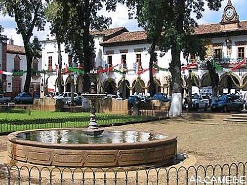
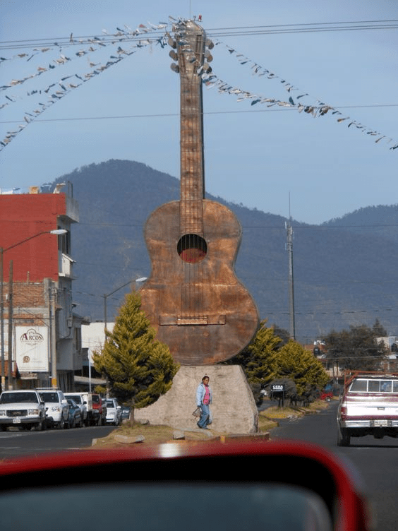

Morelia
La capital michoacana y cuna del estudiante

Morelia (de 1541 a 1545, Mechuacán y de 1545 a 1828, Valladolid) es una ciudad del occidente de México,
capital del estado de Michoacán de Ocampo y cabecera del municipio homónimo.
La urbe está situada en el valle de Guayangareo, formado por un repliegue del Eje Neovolcánico,
en la región Morelia del estado, a una altitud de referencia en el centro de 1920 m.s.n.m
Sitio web oficial
Catedral de Morelia
Catedral de Morelia, icono de la edicicacion de la cantera rosa

La catedral de Morelia es un recinto religioso sede de la arquidiócesis de Morelia de la Iglesia católica en México.
Se encuentra ubicada como su nombre propiamente lo dice en la ciudad de Morelia, capital del estado de Michoacán,
México. La catedral se localiza en el primer cuadro de la ciudad, conformando la traza del Centro histórico de Morelia.
El edificio fue construido en el siglo XVIII en la época del virreinato, es de estilo barroco y está realizado en
cantera rosada que le da un color peculiar y característico. Un importante grupo familiar encabezado por Sebastián de
Guedea colaboró en su construcción por un largo periodo; ellos fueron Andrés, Pedro, Diego, Miguel, Anastacio, Lorenzo
y Joseph todos de apellido Guedea.
Sitio web oficial
Pazcuaro
Pueblo magico de Pazcuaro

El pueblo de Pazcuaro fue una de las primeras ciudades que fundaron los purépechas, hacia el año 1300.
La tradición cuenta que fue fundada por Curatame y que luego fue convertida en el centro religioso y ceremonial del pueblo purépecha por Tariácuri. En 1522,
al momento de la llegada de los españoles, la capital se había trasladado a Tzintzuntzan, y subsistían en Pátzcuaro solamente un centro ceremonial escasamente poblado.
Sitio web oficial
Paracho
Pueblo magico de la Guitarra

El pueblo de Paracho esta Localizado en el estado de Michoacán, Paracho es un municipio cuya superficie, población, altitud y otra información importante se proporciona a continuación.
Para todos sus procedimientos administrativos, puede dirigirse al ayuntamiento de Paracho en la dirección y horarios indicados en esta página, o contactar a la recepción del ayuntamiento por teléfono o por correo electrónico
según su preferencia y datos disponibles.
Sitio web oficial